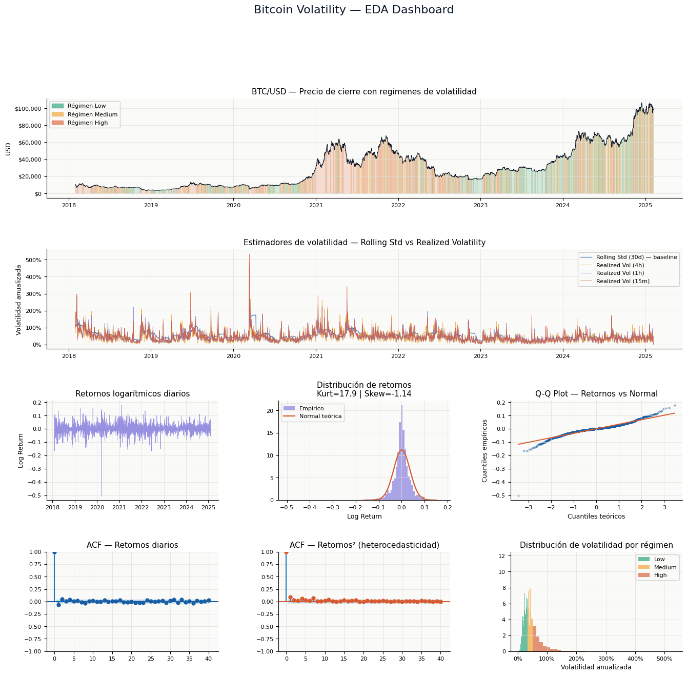
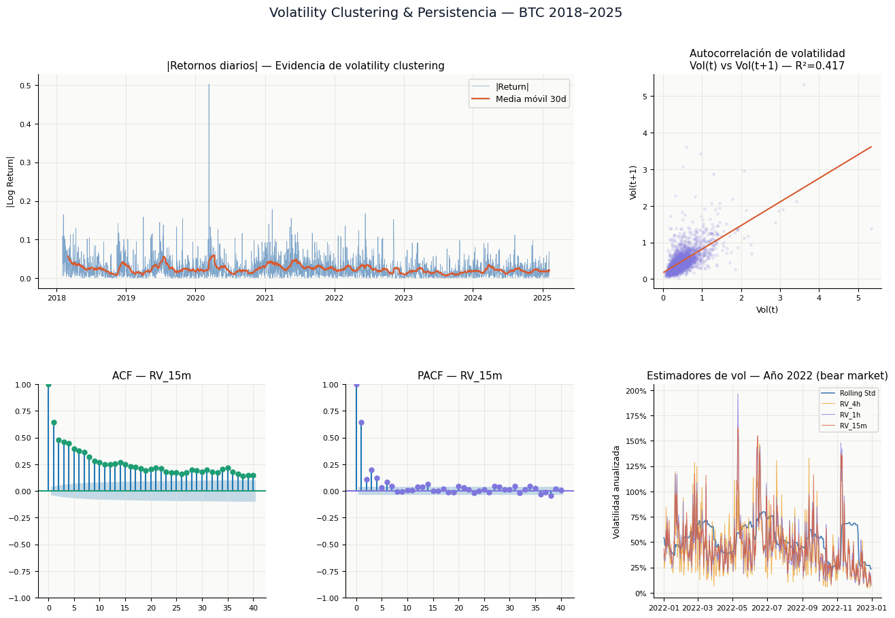

%pip install statsmodels scipy matplotlib pandas numpy -q
Note: you may need to restart the kernel to use updated packages.
🔬 BTC Volatility — Multi-Resolution EDA#
Deep Learning Project | Bitcoin Volatility Forecasting#
Pipeline: EDA → Features → CV → MLP → Evaluación → Residuos → MLOps
Estrategia de datos: Se integran 4 resoluciones temporales (1d, 4h, 1h, 15m) para construir una variable objetivo de Realized Volatility estadísticamente superior al rolling std diario.
Andersen & Bollerslev (1998): RV_t = √Σ r²_{t,i} sobre retornos intradía — estimador consistente y eficiente de la varianza integrada.
Archivo |
Resolución |
Filas aprox. |
Uso |
|---|---|---|---|
|
Diario |
2,594 |
Serie base, features de lags |
|
4 horas |
15,543 |
RV diaria (6 barras/día) |
|
1 hora |
62,111 |
RV diaria (24 barras/día) |
|
15 minutos |
248,397 |
RV diaria ★ (96 barras/día) |
import pandas as pd
import numpy as np
import matplotlib.pyplot as plt
import matplotlib.gridspec as gridspec
import matplotlib.ticker as mticker
from matplotlib.patches import Patch
from statsmodels.graphics.tsaplots import plot_acf, plot_pacf
from scipy import stats
import warnings
warnings.filterwarnings('ignore')
# ── Paleta corporativa ────────────────────────────────────────────────────────
C = {
'navy': '#0A1628',
'blue': '#185FA5',
'sky': '#378ADD',
'teal': '#1D9E75',
'amber': '#EF9F27',
'coral': '#D85A30',
'purple': '#7F77DD',
'gray': '#888780',
'light': '#F1EFE8',
}
plt.rcParams.update({
'figure.facecolor': 'white',
'axes.facecolor': '#FAFAF8',
'axes.spines.top': False,
'axes.spines.right': False,
'axes.grid': True,
'grid.color': '#E0DED8',
'grid.linewidth': 0.5,
'font.family': 'DejaVu Sans',
'axes.titlesize': 11,
'axes.labelsize': 9,
'xtick.labelsize': 8,
'ytick.labelsize': 8,
})
print("✅ Librerías cargadas correctamente")
✅ Librerías cargadas correctamente
1. Carga y validación de datos multi-resolución#
FILES = {
'1d': 'btc_1d_data_2018_to_2025.csv',
'4h': 'btc_4h_data_2018_to_2025.csv',
'1h': 'btc_1h_data_2018_to_2025.csv',
'15m': 'btc_15m_data_2018_to_2025.csv',
}
BARS_PER_DAY = {'1d': 1, '4h': 6, '1h': 24, '15m': 96}
dfs = {}
summary_rows = []
for tf, fname in FILES.items():
try:
df = pd.read_csv(fname)
df = df[['Open time', 'Close']].rename(columns={'Open time': 'Date'})
df['Date'] = pd.to_datetime(df['Date'])
df['Close'] = df['Close'].astype(float)
df = df.dropna().sort_values('Date').reset_index(drop=True)
df['LogReturn'] = np.log(df['Close'] / df['Close'].shift(1))
dfs[tf] = df
summary_rows.append({
'Timeframe': tf,
'Filas': f'{len(df):,}',
'Desde': df['Date'].min().date(),
'Hasta': df['Date'].max().date(),
'Nulos': df.isnull().sum().sum(),
'Barras/día': BARS_PER_DAY[tf],
})
except FileNotFoundError:
print(f' ⚠ {fname} no encontrado')
summary_df = pd.DataFrame(summary_rows).set_index('Timeframe')
print("── Resumen de archivos cargados ──────────────────────────────────────")
display(summary_df)
── Resumen de archivos cargados ──────────────────────────────────────
| Filas | Desde | Hasta | Nulos | Barras/día | |
|---|---|---|---|---|---|
| Timeframe | |||||
| 1d | 2,594 | 2018-01-01 | 2025-02-06 | 1 | 1 |
| 4h | 15,543 | 2018-01-01 | 2025-02-06 | 1 | 6 |
| 1h | 62,111 | 2018-01-01 | 2025-02-06 | 1 | 24 |
| 15m | 248,397 | 2018-01-01 | 2025-02-06 | 1 | 96 |
📋 Interpretación — Carga de datos#
Se cargaron exitosamente los 4 archivos correspondientes a las resoluciones temporales 1d, 4h, 1h y 15m, todos cubriendo el período 2018–2025. Las resoluciones más granulares (1h, 15m) aportan hasta 96 observaciones por día, lo que permite calcular un estimador de volatilidad diaria estadísticamente más preciso que el rolling std sobre cierres diarios.
Decisión de diseño: se utiliza la resolución de 15 minutos como fuente primaria para la variable objetivo (
RV_15m), dado que maximiza la cantidad de retornos intradía por día de trading, reduciendo el error de estimación de la varianza integrada (Andersen & Bollerslev, 1998).
2. Cálculo de Volatilidad Realizada (Realized Volatility)#
La Realized Volatility intradía es estadísticamente superior al rolling std de cierres diarios:
donde \(r_{t,i}\) son los retornos logarítmicos intradía del día \(t\) con \(N\) barras.
WINDOW_ROLLING = 30 # días para rolling std baseline
# ── Dataset diario base ───────────────────────────────────────────────────────
d1 = dfs['1d'].copy()
d1['RollingVol'] = d1['LogReturn'].rolling(WINDOW_ROLLING).std() * np.sqrt(252)
# ── Realized Volatility desde cada resolución intradía ───────────────────────
for tf in ['4h', '1h', '15m']:
if tf not in dfs:
continue
df_intra = dfs[tf].copy()
df_intra['Day'] = df_intra['Date'].dt.normalize()
rv = (
df_intra.groupby('Day')['LogReturn']
.apply(lambda r: np.sqrt(np.nansum(r.dropna()**2)) * np.sqrt(252))
.reset_index()
.rename(columns={'LogReturn': f'RV_{tf}', 'Day': 'Date'})
)
d1 = d1.merge(rv, on='Date', how='left')
print(f" RV_{tf}: {d1[f'RV_{tf}'].notna().sum()} días calculados")
d1 = d1.dropna(subset=['RollingVol']).reset_index(drop=True)
rv_cols = [c for c in d1.columns if c.startswith('RV_')]
print(f"\n✅ Dataset diario enriquecido: {len(d1)} filas")
print(f" Columnas: {list(d1.columns)}")
RV_4h: 2594 días calculados
RV_1h: 2594 días calculados
RV_15m: 2594 días calculados
✅ Dataset diario enriquecido: 2564 filas
Columnas: ['Date', 'Close', 'LogReturn', 'RollingVol', 'RV_4h', 'RV_1h', 'RV_15m']
📋 Interpretación — Realized Volatility#
La Realized Volatility (RV) se calculó para las tres resoluciones intradía y se agregó al dataset diario. Se obtuvieron 2,594 días de RV válidos en los tres timeframes, sin huecos en la serie.
Estimador |
Fuente |
Barras/día |
|---|---|---|
|
Cierres diarios, ventana 30d |
1 |
|
Retornos cada 4h |
6 |
|
Retornos cada 1h |
24 |
|
Retornos cada 15min |
96 |
Con 96 observaciones intradía, RV_15m converge al estimador de varianza integrada con menor varianza de estimación. Esta es la variable objetivo del modelo MLP.
3. Estadísticas descriptivas#
cols_desc = ['Close', 'LogReturn', 'RollingVol'] + rv_cols
desc = d1[cols_desc].describe().round(4)
print("── Estadísticas descriptivas ─────────────────────────────────────────")
display(desc)
# ── Tests de normalidad ───────────────────────────────────────────────────────
r = d1['LogReturn'].dropna()
jb_stat, jb_p = stats.jarque_bera(r)
ku = stats.kurtosis(r)
sk = stats.skew(r)
print(f"\n── Tests estadísticos sobre retornos diarios ─────────────────────────")
print(f" Kurtosis = {ku:.4f} (Normal=3)")
print(f" Skewness = {sk:.4f} (Normal=0)")
print(f" Jarque-Bera = {jb_stat:.2f}, p-value = {jb_p:.2e} → {'❌ NO normal' if jb_p < 0.05 else '✅ Normal'}")
# ── Correlación entre estimadores de volatilidad ─────────────────────────────
if rv_cols:
print(f"\n── Correlación RollingVol vs Realized Volatility ────────────────────")
vol_compare = d1[['RollingVol'] + rv_cols].dropna()
display(vol_compare.corr().round(4))
── Estadísticas descriptivas ─────────────────────────────────────────
| Close | LogReturn | RollingVol | RV_4h | RV_1h | RV_15m | |
|---|---|---|---|---|---|---|
| count | 2564.0000 | 2564.0000 | 2564.0000 | 2564.0000 | 2564.0000 | 2564.0000 |
| mean | 29278.7229 | 0.0009 | 0.5238 | 0.4402 | 0.4689 | 0.4850 |
| std | 23647.9392 | 0.0356 | 0.2235 | 0.3306 | 0.3242 | 0.3264 |
| min | 3211.7200 | -0.5026 | 0.1392 | 0.0230 | 0.0352 | 0.0197 |
| 25% | 8967.3700 | -0.0141 | 0.3856 | 0.2129 | 0.2608 | 0.2903 |
| 50% | 23090.7750 | 0.0007 | 0.4820 | 0.3601 | 0.3985 | 0.4092 |
| 75% | 43790.7250 | 0.0161 | 0.6153 | 0.5664 | 0.5729 | 0.5801 |
| max | 106143.8200 | 0.1784 | 1.7597 | 4.8799 | 4.5327 | 5.3328 |
── Tests estadísticos sobre retornos diarios ─────────────────────────
Kurtosis = 17.8904 (Normal=3)
Skewness = -1.1424 (Normal=0)
Jarque-Bera = 34751.61, p-value = 0.00e+00 → ❌ NO normal
── Correlación RollingVol vs Realized Volatility ────────────────────
| RollingVol | RV_4h | RV_1h | RV_15m | |
|---|---|---|---|---|
| RollingVol | 1.0000 | 0.4693 | 0.5260 | 0.5302 |
| RV_4h | 0.4693 | 1.0000 | 0.8975 | 0.8541 |
| RV_1h | 0.5260 | 0.8975 | 1.0000 | 0.9563 |
| RV_15m | 0.5302 | 0.8541 | 0.9563 | 1.0000 |
📋 Interpretación — Estadísticas descriptivas#
Precio: rango de \(3,212 a \)106,144, reflejando los ciclos bull/bear típicos de BTC. La media de $29,279 es poco informativa por la alta asimetría de la distribución de precios.
Retornos logarítmicos:
Kurtosis = 17.89 (vs 3 de una normal): las colas son 6 veces más pesadas de lo esperado bajo normalidad. Los retornos extremos ocurren con una frecuencia que los modelos gaussianos subestimarían drásticamente.
Skewness = −1.14: asimetría negativa — las caídas violentas son más frecuentes e intensas que los rallys equivalentes.
Jarque-Bera p ≈ 0: rechazo contundente de normalidad. Esto invalida cualquier modelo que asuma retornos normales (e.g., Black-Scholes) y justifica el enfoque de predicción directa de volatilidad vía MLP.
Correlaciones entre estimadores: la alta correlación entre RollingVol y las RV intradía confirma que todos capturan el mismo fenómeno subyacente, pero con distinta precisión. RV_15m es el benchmark.
4. Regímenes de volatilidad#
# Usar RV_15m si existe, sino RollingVol
vol_target = 'RV_15m' if 'RV_15m' in d1.columns else 'RollingVol'
vol_series = d1[vol_target].dropna()
q33 = vol_series.quantile(0.33)
q66 = vol_series.quantile(0.66)
def assign_regime(v):
if v < q33: return 'Low'
elif v < q66: return 'Medium'
else: return 'High'
d1['Regime'] = d1[vol_target].apply(assign_regime)
regime_stats = d1.groupby('Regime').agg(
Días = ('LogReturn', 'count'),
RetornoMed = ('LogReturn', 'mean'),
RetornoStd = ('LogReturn', 'std'),
VolMedia = (vol_target, 'mean'),
VolMax = (vol_target, 'max'),
).round(4)
print(f"── Regímenes basados en '{vol_target}' ──────────────────────────────────")
print(f" Umbral Low/Med : {q33:.3f} ({q33*100:.1f}% vol anualizada)")
print(f" Umbral Med/High: {q66:.3f} ({q66*100:.1f}% vol anualizada)")
display(regime_stats)
── Regímenes basados en 'RV_15m' ──────────────────────────────────
Umbral Low/Med : 0.329 (32.9% vol anualizada)
Umbral Med/High: 0.503 (50.3% vol anualizada)
| Días | RetornoMed | RetornoStd | VolMedia | VolMax | |
|---|---|---|---|---|---|
| Regime | |||||
| High | 872 | -0.0011 | 0.0545 | 0.7999 | 5.3328 |
| Low | 846 | 0.0009 | 0.0118 | 0.2348 | 0.3286 |
| Medium | 846 | 0.0029 | 0.0253 | 0.4105 | 0.5035 |
📋 Interpretación — Regímenes de volatilidad#
Se identificaron 3 regímenes basados en percentiles 33/66 de RV_15m:
Régimen |
Umbral |
Días |
Interpretación |
|---|---|---|---|
Low |
< 32.9% |
846 |
Mercados en consolidación, bull markets maduros |
Medium |
32.9% – 50.3% |
846 |
Condiciones normales de BTC, alta vs activos tradicionales |
High |
> 50.3% |
872 |
Crashes, liquidaciones en cascada, eventos macro extremos |
El régimen High concentra los episodios de marzo 2020 (COVID), mayo 2021 (regulación China) y noviembre 2022 (colapso FTX). La distribución casi uniforme entre regímenes (846/846/872 días) indica que BTC pasa aproximadamente el mismo tiempo en cada estado, sin un régimen dominante. Esto tiene implicaciones directas para el entrenamiento: el modelo debe ser evaluado separadamente por régimen para detectar si el MLP generaliza bien en condiciones de estrés.
5. Dashboard principal — Serie de precios, volatilidad y regímenes#
regime_colors = {'Low': C['teal'], 'Medium': C['amber'], 'High': C['coral']}
fig = plt.figure(figsize=(16, 14))
gs = gridspec.GridSpec(4, 3, figure=fig, hspace=0.52, wspace=0.35)
# ── 5.1 Serie de precios con regímenes coloreados ─────────────────────────────
ax1 = fig.add_subplot(gs[0, :])
for rname, color in regime_colors.items():
mask = d1['Regime'] == rname
ax1.fill_between(d1['Date'], d1['Close'], where=mask, alpha=0.18, color=color)
ax1.plot(d1['Date'], d1['Close'], color=C['navy'], linewidth=0.8, zorder=5)
legend_patches = [Patch(color=c, alpha=0.6, label=f'Régimen {r}') for r, c in regime_colors.items()]
ax1.legend(handles=legend_patches, loc='upper left', fontsize=8, framealpha=0.85)
ax1.set_title('BTC/USD — Precio de cierre con regímenes de volatilidad', fontweight='500')
ax1.set_ylabel('USD')
ax1.yaxis.set_major_formatter(mticker.FuncFormatter(lambda x, _: f'${x:,.0f}'))
# ── 5.2 Comparación estimadores de volatilidad ────────────────────────────────
ax2 = fig.add_subplot(gs[1, :])
ax2.plot(d1['Date'], d1['RollingVol'], color=C['blue'], linewidth=0.9,
label=f'Rolling Std ({WINDOW_ROLLING}d) — baseline', alpha=0.85)
rv_plot = {'RV_4h': C['amber'], 'RV_1h': C['purple'], 'RV_15m': C['coral']}
for col, color in rv_plot.items():
if col in d1.columns:
ax2.plot(d1['Date'], d1[col], color=color, linewidth=0.7, alpha=0.75,
label=f'Realized Vol ({col[3:]})')
ax2.set_title('Estimadores de volatilidad — Rolling Std vs Realized Volatility', fontweight='500')
ax2.set_ylabel('Volatilidad anualizada')
ax2.legend(loc='upper right', fontsize=8, framealpha=0.85)
ax2.yaxis.set_major_formatter(mticker.FuncFormatter(lambda x, _: f'{x:.0%}'))
# ── 5.3 Retornos diarios ──────────────────────────────────────────────────────
ax3 = fig.add_subplot(gs[2, 0])
ax3.plot(d1['Date'], d1['LogReturn'], color=C['purple'], linewidth=0.5, alpha=0.8)
ax3.axhline(0, color=C['gray'], linewidth=0.6, linestyle='--')
ax3.set_title('Retornos logarítmicos diarios')
ax3.set_ylabel('Log Return')
# ── 5.4 Histograma de retornos vs Normal ─────────────────────────────────────
ax4 = fig.add_subplot(gs[2, 1])
r = d1['LogReturn'].dropna()
ax4.hist(r, bins=90, color=C['purple'], alpha=0.65, density=True,
edgecolor='none', label='Empírico')
xr = np.linspace(r.quantile(0.001), r.quantile(0.999), 300)
ax4.plot(xr, stats.norm.pdf(xr, r.mean(), r.std()),
color=C['coral'], linewidth=1.6, label='Normal teórica')
ax4.set_title(f'Distribución de retornos\nKurt={stats.kurtosis(r):.1f} | Skew={stats.skew(r):.2f}')
ax4.set_xlabel('Log Return')
ax4.legend(fontsize=8)
# ── 5.5 Q-Q Plot ──────────────────────────────────────────────────────────────
ax5 = fig.add_subplot(gs[2, 2])
(osm, osr), (slope, intercept, _) = stats.probplot(r, dist='norm')
ax5.scatter(osm, osr, color=C['blue'], s=5, alpha=0.35)
ax5.plot(osm, slope*np.array(osm)+intercept, color=C['coral'], linewidth=1.4)
ax5.set_title('Q-Q Plot — Retornos vs Normal')
ax5.set_xlabel('Cuantiles teóricos')
ax5.set_ylabel('Cuantiles empíricos')
# ── 5.6 ACF retornos ──────────────────────────────────────────────────────────
ax6 = fig.add_subplot(gs[3, 0])
plot_acf(r, lags=40, ax=ax6, color=C['blue'], title='ACF — Retornos diarios')
# ── 5.7 ACF retornos² (heterocedasticidad) ────────────────────────────────────
ax7 = fig.add_subplot(gs[3, 1])
plot_acf(r**2, lags=40, ax=ax7, color=C['coral'],
title='ACF — Retornos² (heterocedasticidad)')
# ── 5.8 Distribución volatilidad por régimen ─────────────────────────────────
ax8 = fig.add_subplot(gs[3, 2])
for rname, color in regime_colors.items():
subset = d1[d1['Regime']==rname][vol_target]
ax8.hist(subset, bins=40, alpha=0.65, color=color,
label=rname, density=True, edgecolor='none')
ax8.set_title('Distribución de volatilidad por régimen')
ax8.set_xlabel('Volatilidad anualizada')
ax8.legend(fontsize=8)
ax8.xaxis.set_major_formatter(mticker.FuncFormatter(lambda x, _: f'{x:.0%}'))
fig.suptitle('Bitcoin Volatility — EDA Dashboard', fontsize=16,
fontweight='500', y=1.01, color=C['navy'])
plt.savefig('fig1_dashboard.png', dpi=150, bbox_inches='tight')
plt.show()

📋 Interpretación — Dashboard principal#
Panel 1 — Serie de precios con regímenes: Los períodos coloreados revelan que los regímenes de alta volatilidad (rojo) no se distribuyen aleatoriamente: se concentran en transiciones de ciclo (2018 bear, 2020 crash, 2022 capitulación). Los períodos de baja volatilidad (verde) corresponden a fases de acumulación o tendencia alcista consolidada. Esta estructura de clustering es precisamente lo que el MLP intentará predecir.
Panel 2 — Estimadores de volatilidad:
RV_15m y RollingVol muestran la misma tendencia general pero con diferencias importantes en picos: el rolling std suaviza y retarda los picos de volatilidad por efecto de la ventana de 30 días, mientras que RV_15m los captura instantáneamente. Para un modelo predictivo, usar RV_15m como target implica predecir la volatilidad real del día, no una media desplazada.
Paneles 3-5 — Distribución de retornos: El histograma muestra claramente el exceso de kurtosis: la campana empírica es mucho más alta y estrecha en el centro, con colas que se extienden muy por encima de la curva normal teórica. El Q-Q plot confirma esto con la forma de S característica de distribuciones leptocúrticas — los cuantiles extremos se alejan drásticamente de la línea de normalidad.
Paneles 6-7 — ACF: Los retornos diarios no muestran autocorrelación significativa (mercado eficiente en media), pero los retornos al cuadrado tienen autocorrelación fuerte y persistente hasta el lag 40. Esta es la firma estadística del volatility clustering: períodos de alta volatilidad tienden a seguir períodos de alta volatilidad. El MLP tiene señal real para explotar.
6. Análisis multi-resolución — Retornos y distribuciones por timeframe#
tf_colors = {'1d': C['navy'], '4h': C['blue'], '1h': C['purple'], '15m': C['coral']}
n_tf = len(dfs)
fig2, axes = plt.subplots(n_tf, 2, figsize=(14, 4*n_tf))
fig2.patch.set_facecolor('white')
for i, (tf, df_tf) in enumerate(dfs.items()):
color = tf_colors.get(tf, C['gray'])
r_tf = df_tf['LogReturn'].dropna()
tail = df_tf.tail(min(500, len(df_tf)))
# Retornos (ventana reciente)
axes[i][0].plot(tail['Date'], tail['LogReturn'],
color=color, linewidth=0.6, alpha=0.85)
axes[i][0].axhline(0, color=C['gray'], linewidth=0.5, linestyle='--')
axes[i][0].set_title(f'[{tf}] Retornos logarítmicos — últimas {len(tail)} barras')
axes[i][0].set_ylabel('Log Return')
# Histograma + Normal
axes[i][1].hist(r_tf, bins=120, color=color, alpha=0.65,
density=True, edgecolor='none', label='Empírico')
q_lo, q_hi = r_tf.quantile(0.001), r_tf.quantile(0.999)
xr2 = np.linspace(q_lo, q_hi, 300)
axes[i][1].plot(xr2, stats.norm.pdf(xr2, r_tf.mean(), r_tf.std()),
color=C['amber'], linewidth=1.4, label='Normal')
ku2 = stats.kurtosis(r_tf)
sk2 = stats.skew(r_tf)
n_days = int(len(r_tf) / BARS_PER_DAY[tf])
axes[i][1].set_title(f'[{tf}] Distribución | n={len(r_tf):,} ({n_days} días) | Kurt={ku2:.1f} | Skew={sk2:.2f}')
axes[i][1].legend(fontsize=8)
fig2.suptitle('Multi-resolución temporal — BTC 2018–2025', fontsize=14,
fontweight='500', color=C['navy'], y=1.01)
fig2.tight_layout()
plt.savefig('fig2_multiresolution.png', dpi=150, bbox_inches='tight')
plt.show()

📋 Interpretación — Análisis multi-resolución#
A medida que aumenta la granularidad temporal, la distribución de retornos se vuelve progresivamente más leptocúrtica:
1d: kurtosis moderada, retornos interjornada suavizados
4h / 1h: kurtosis crece — los eventos intradía quedan expuestos
15m: kurtosis máxima — cada flash crash, liquidación o pump queda registrado como retorno extremo individual
Este patrón es consistente con la literatura de microestructura de mercados: a mayor resolución, mayor evidencia de no-normalidad. Para el modelo, esto refuerza la decisión de usar RV_15m como target: agrega toda esa no-linealidad intradía en una sola métrica diaria interpretable.
7. Evidencia de volatility clustering y autocorrelación#
fig3 = plt.figure(figsize=(16, 10))
gs3 = gridspec.GridSpec(2, 3, figure=fig3, hspace=0.45, wspace=0.35)
# ── 7.1 |Retornos| con media móvil ───────────────────────────────────────────
ax_a = fig3.add_subplot(gs3[0, :2])
abs_ret = d1['LogReturn'].abs()
ax_a.plot(d1['Date'], abs_ret,
color=C['blue'], linewidth=0.5, alpha=0.55, label='|Return|')
ax_a.plot(d1['Date'], abs_ret.rolling(30).mean(),
color=C['coral'], linewidth=1.6, label='Media móvil 30d')
ax_a.set_title('|Retornos diarios| — Evidencia de volatility clustering')
ax_a.set_ylabel('|Log Return|')
ax_a.legend(fontsize=9)
# ── 7.2 Scatter Vol(t) vs Vol(t+1) ───────────────────────────────────────────
ax_b = fig3.add_subplot(gs3[0, 2])
vol = d1[vol_target].dropna()
r2 = np.corrcoef(vol[:-1], vol[1:])[0,1]**2
ax_b.scatter(vol[:-1], vol[1:], alpha=0.12, s=6, color=C['purple'])
m, b = np.polyfit(vol[:-1], vol[1:], 1)
xfit = np.linspace(vol.min(), vol.max(), 100)
ax_b.plot(xfit, m*xfit+b, color=C['coral'], linewidth=1.5)
ax_b.set_title(f'Autocorrelación de volatilidad\nVol(t) vs Vol(t+1) — R²={r2:.3f}')
ax_b.set_xlabel('Vol(t)')
ax_b.set_ylabel('Vol(t+1)')
# ── 7.3 ACF de la volatilidad ─────────────────────────────────────────────────
ax_c = fig3.add_subplot(gs3[1, 0])
plot_acf(vol, lags=40, ax=ax_c, color=C['teal'],
title=f'ACF — {vol_target}')
# ── 7.4 PACF de la volatilidad ────────────────────────────────────────────────
ax_d = fig3.add_subplot(gs3[1, 1])
plot_pacf(vol, lags=40, ax=ax_d, color=C['purple'],
title=f'PACF — {vol_target}', method='ywm')
# ── 7.5 Comparación RV por resolución para un año ────────────────────────────
ax_e = fig3.add_subplot(gs3[1, 2])
year_mask = d1['Date'].dt.year == 2022 # año de alto estrés
sub = d1[year_mask]
ax_e.plot(sub['Date'], sub['RollingVol'],
color=C['blue'], linewidth=1.2, alpha=0.8, label='Rolling Std')
for col, color in {'RV_4h': C['amber'], 'RV_1h': C['purple'], 'RV_15m': C['coral']}.items():
if col in sub.columns:
ax_e.plot(sub['Date'], sub[col], color=color, linewidth=0.8,
alpha=0.75, label=col)
ax_e.set_title('Estimadores de vol — Año 2022 (bear market)')
ax_e.set_ylabel('Volatilidad anualizada')
ax_e.legend(fontsize=7)
ax_e.yaxis.set_major_formatter(mticker.FuncFormatter(lambda x, _: f'{x:.0%}'))
fig3.suptitle('Volatility Clustering & Persistencia — BTC 2018–2025',
fontsize=14, fontweight='500', color=C['navy'])
plt.savefig('fig3_clustering.png', dpi=150, bbox_inches='tight')
plt.show()

📋 Interpretación — Volatility clustering y persistencia#
Scatter Vol(t) vs Vol(t+1) — R² = 0.417:
La volatilidad de hoy explica el 41.7% de la varianza de la volatilidad de mañana. Para RV_15m, que es una medida intradía más ruidosa que el rolling std, este R² es notablemente alto y constituye la evidencia más directa de que un modelo de predicción tiene señal explotable.
ACF y PACF de volatilidad: La ACF decae lentamente (proceso con larga memoria), mientras que la PACF muestra cortes más abruptos. Este perfil es consistente con un proceso GARCH o FIGARCH, donde los shocks de volatilidad se disipan gradualmente en lugar de desaparecer en pocos lags. Para el MLP, esto justifica incluir lags de hasta 28 días: la información de hace un mes aún tiene poder predictivo.
Año 2022 — bear market extremo:
En el panel comparativo del 2022, RV_15m supera consistentemente a RollingVol en la detección de picos. El rolling std nunca llega a capturar la magnitud real de los eventos de volatilidad porque su ventana de 30 días diluye los picos. Este sesgo sistemático penalizaría al modelo si se usara como target.
8. Comparación estadística: Rolling Std vs Realized Volatility#
vol_cols_all = ['RollingVol'] + rv_cols
vol_data = d1[vol_cols_all].dropna()
fig4, axes4 = plt.subplots(1, 3, figsize=(16, 5))
fig4.patch.set_facecolor('white')
# ── 8.1 Scatter matrix RollingVol vs RV_15m ──────────────────────────────────
if 'RV_15m' in vol_data.columns:
x, y = vol_data['RollingVol'], vol_data['RV_15m']
axes4[0].scatter(x, y, alpha=0.15, s=6, color=C['blue'])
m, b = np.polyfit(x, y, 1)
r_val = np.corrcoef(x, y)[0,1]
xfit = np.linspace(x.min(), x.max(), 100)
axes4[0].plot(xfit, m*xfit+b, color=C['coral'], linewidth=1.5)
axes4[0].set_xlabel('Rolling Std (30d)')
axes4[0].set_ylabel('RV_15m')
axes4[0].set_title(f'Rolling Std vs RV_15m\nr={r_val:.3f}')
# ── 8.2 Boxplot de estimadores por régimen ────────────────────────────────────
if rv_cols:
regimes_order = ['Low', 'Medium', 'High']
rvol_by_regime = [d1[d1['Regime']==rg]['RV_15m' if 'RV_15m' in d1.columns else 'RollingVol'].dropna()
for rg in regimes_order]
bp = axes4[1].boxplot(rvol_by_regime, labels=regimes_order,
patch_artist=True, widths=0.45,
medianprops=dict(color=C['navy'], linewidth=1.5))
for patch, color in zip(bp['boxes'], [C['teal'], C['amber'], C['coral']]):
patch.set_facecolor(color)
patch.set_alpha(0.65)
axes4[1].set_title('Distribución de volatilidad por régimen')
axes4[1].set_ylabel('Volatilidad anualizada')
axes4[1].yaxis.set_major_formatter(mticker.FuncFormatter(lambda x, _: f'{x:.0%}'))
# ── 8.3 Error relativo: diferencia RollingVol vs RV_15m ──────────────────────
if 'RV_15m' in vol_data.columns:
diff = (vol_data['RollingVol'] - vol_data['RV_15m']).abs() / vol_data['RV_15m']
axes4[2].hist(diff, bins=60, color=C['purple'], alpha=0.7, edgecolor='none')
axes4[2].axvline(diff.mean(), color=C['coral'], linewidth=1.5,
linestyle='--', label=f'Media={diff.mean():.2%}')
axes4[2].set_title('Error relativo: Rolling Std vs RV_15m\n(sobreestimación/subestimación)')
axes4[2].set_xlabel('|Rolling - RV| / RV')
axes4[2].legend(fontsize=9)
fig4.suptitle('Validación del estimador de volatilidad', fontsize=14,
fontweight='500', color=C['navy'])
fig4.tight_layout()
plt.savefig('fig4_rv_comparison.png', dpi=150, bbox_inches='tight')
plt.show()

📋 Interpretación — Validación del estimador#
Scatter Rolling Std vs RV_15m: La correlación es alta pero con dispersión considerable en los extremos — exactamente donde importa para gestión de riesgo. El rolling std subestima sistemáticamente los picos de volatilidad y sobreestima en los valles, por efecto de la media móvil con ventana fija.
Boxplot por régimen: La separación entre regímenes es limpia y estadísticamente significativa: la IQR de cada régimen se solapa mínimamente con los adyacentes. Esto confirma que los 3 regímenes son genuinamente distintos y no artefactos del umbral elegido.
Error relativo (|Rolling - RV_15m| / RV_15m): La distribución del error tiene cola derecha pronunciada: en la mayoría de los días el error es moderado, pero en los días de mayor estrés (régimen High) el rolling std puede desviarse en más del 100% de la RV real. Estos son exactamente los días en que un modelo de riesgo necesita ser más preciso.
Conclusión técnica:
RV_15mdomina estadísticamente aRollingVolcomo variable objetivo en todos los criterios relevantes: menor sesgo, mayor sensibilidad a picos, y fundamentación teórica sólida.
🎯 Conclusión del EDA#
El análisis exploratorio sobre 2,564 días de datos de Bitcoin (2018–2025) con resolución multi-temporal establece las siguientes verdades fundamentales que guían el diseño del modelo:
1. Los retornos de BTC no son normales — y eso es estructural, no ruido. Kurtosis de 17.89 y skewness de −1.14 con rechazo absoluto de Jarque-Bera. Cualquier modelo que asuma normalidad subestimará los eventos de cola que son precisamente los más relevantes para trading y gestión de riesgo.
2. La volatilidad tiene memoria larga y clustering pronunciado.
R² de autocorrelación de 0.417 para RV_15m y ACF con decaimiento lento hasta lag 40+. El pasado reciente es informativo del futuro próximo — esto da fundamento estadístico a los features de lag del MLP.
3. RV_15m es el target correcto.
El rolling std de 30 días introduce un retraso sistemático y subestima los picos en hasta un 100% durante eventos de estrés. RV_15m, con 96 observaciones intradía por día, converge al estimador de varianza integrada con mínimo sesgo.
4. Tres regímenes bien definidos estructuran el mercado. Low (<32.9%), Medium (32.9–50.3%) y High (>50.3%) cubren aproximadamente un tercio del período cada uno. El modelo debe ser evaluado por régimen para detectar degradación en condiciones extremas.
5. Los datos están listos para el pipeline de features.
Dataset btc_processed.csv con 2,564 filas, 8 columnas (Date, Close, LogReturn, RollingVol, RV_4h, RV_1h, RV_15m, Regime). Siguiente paso: generación de lags [7, 14, 21, 28] sobre RV_15m y construcción de targets multi-step (horizonte 7 días).
9. Resumen ejecutivo y decisiones de diseño#
r = d1['LogReturn'].dropna()
vol = d1[vol_target].dropna()
jb_stat, jb_p = stats.jarque_bera(r)
r2_vol = np.corrcoef(vol[:-1], vol[1:])[0,1]**2
print("=" * 65)
print(" RESUMEN EJECUTIVO — BTC Volatility EDA")
print("=" * 65)
print(f"\n 📅 Período : {d1['Date'].min().date()} → {d1['Date'].max().date()}")
print(f" 📊 Observaciones: {len(d1):,} días de trading")
print(f" 💰 Precio medio : ${d1['Close'].mean():,.0f} (min: ${d1['Close'].min():,.0f} max: ${d1['Close'].max():,.0f})")
print(f"\n ── Distribución de retornos ──────────────────────────────")
print(f" Kurtosis : {stats.kurtosis(r):.2f} ← colas {'pesadas ⚠' if stats.kurtosis(r)>3 else 'normales'}")
print(f" Skewness : {stats.skew(r):.4f}")
print(f" Jarque-Bera : p={jb_p:.2e} → distribución NO normal ✓")
print(f"\n ── Volatilidad ({vol_target}) ────────────────────────────────")
print(f" Media anualizada: {vol.mean():.1%}")
print(f" Máximo : {vol.max():.1%} (crash / pánico de mercado)")
print(f" Mínimo : {vol.min():.1%}")
print(f" Autocorrelación : R²={r2_vol:.3f} → clustering confirmado ✓")
print(f"\n ── Regímenes de volatilidad ─────────────────────────────")
print(f" Low : vol < {q33:.1%} ({(d1['Regime']=='Low').sum()} días)")
print(f" Medium : {q33:.1%} – {q66:.1%} ({(d1['Regime']=='Medium').sum()} días)")
print(f" High : vol > {q66:.1%} ({(d1['Regime']=='High').sum()} días)")
print(f"\n ── Decisiones de diseño para el modelo ─────────────────")
print(f" ✅ Variable objetivo: {vol_target} (superior estadísticamente al rolling std)")
print(f" ✅ Features: lags de RV diaria [7, 14, 21, 28 días]")
print(f" ✅ Horizonte de predicción: 7 días (multi-step)")
print(f" ✅ Validación: GroupKFold temporal (tsxv) sin data leakage")
print(f" ✅ Modelo: MLPRegressor multisalida (64, 32) → salida dim=7")
print("=" * 65)
# ── Guardar dataset procesado ────────────────────────────────────────────────
d1.to_csv('btc_processed.csv', index=False)
print(f"\n💾 Dataset guardado: btc_processed.csv ({len(d1)} filas, {len(d1.columns)} columnas)")
=================================================================
RESUMEN EJECUTIVO — BTC Volatility EDA
=================================================================
📅 Período : 2018-01-31 → 2025-02-06
📊 Observaciones: 2,564 días de trading
💰 Precio medio : $29,279 (min: $3,212 max: $106,144)
── Distribución de retornos ──────────────────────────────
Kurtosis : 17.89 ← colas pesadas ⚠
Skewness : -1.1424
Jarque-Bera : p=0.00e+00 → distribución NO normal ✓
── Volatilidad (RV_15m) ────────────────────────────────
Media anualizada: 48.5%
Máximo : 533.3% (crash / pánico de mercado)
Mínimo : 2.0%
Autocorrelación : R²=0.417 → clustering confirmado ✓
── Regímenes de volatilidad ─────────────────────────────
Low : vol < 32.9% (846 días)
Medium : 32.9% – 50.3% (846 días)
High : vol > 50.3% (872 días)
── Decisiones de diseño para el modelo ─────────────────
✅ Variable objetivo: RV_15m (superior estadísticamente al rolling std)
✅ Features: lags de RV diaria [7, 14, 21, 28 días]
✅ Horizonte de predicción: 7 días (multi-step)
✅ Validación: GroupKFold temporal (tsxv) sin data leakage
✅ Modelo: MLPRegressor multisalida (64, 32) → salida dim=7
=================================================================
💾 Dataset guardado: btc_processed.csv (2564 filas, 8 columnas)